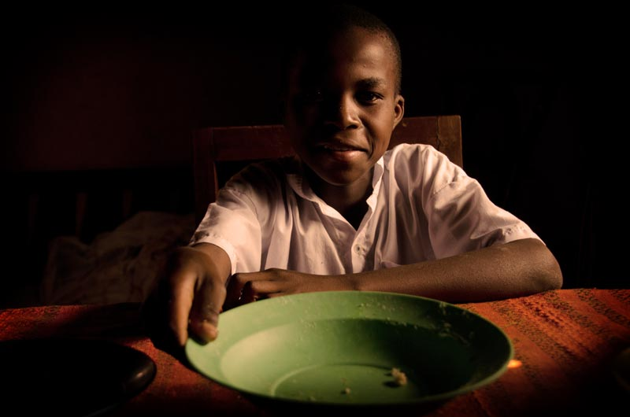
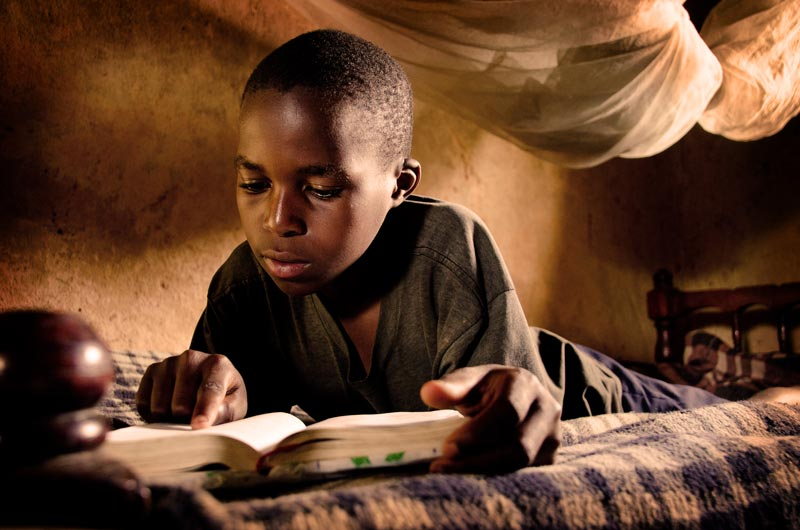
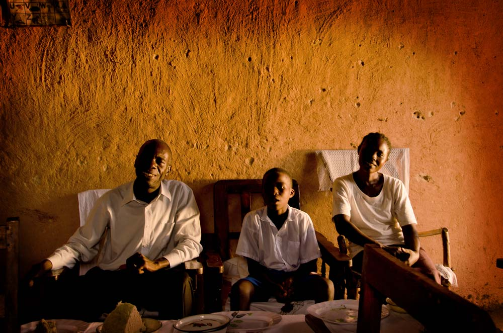

A place to thrive
When their mother died, Julius’s grandma took the seven year old and his younger brother, Joseph, in. Their grandma worked hard in their Kenyan community as a farm labourer, but her small wage meant she struggled to put food on the table for her two growing grandsons.
Struggling to survive
Hunger pains were Julius’s constant companion. He began rummaging through garbage heaps for leftover scraps and scavenging food from hotel rubbish bins. His grandma fell ill and was soon bedridden. With no close relatives nearby, Julius cared for Joseph and his grandma as best he could. Despite his best efforts, she passed away. Grief-stricken and alone, Julius didn’t know what to do.
Their uncle, Wellington, adopted the two boys, which grew his family to nine people. The boys were well loved but the family struggled financially, particularly when the drought affected their harvest. Wellington sold some goats just to meet the food needs of the family. But even then, Wellington worried how he would provide for and help the two new additions to the family.
Loved and cared for
Help came just in time. Julius was sponsored through Compassion, who immediately sent the family food parcels and water filters. Julius received much-needed medical treatment after his years of hard living.
“He was so tiny and looked half his age,” says Petronila, his teacher at the Compassion centre. “He had also gone through a difficult period in his life after losing his mother and grandmother. We welcomed him, prayed for him and encouraged him.”
With the love and support from his family and Compassion, Julius’s health improved and his self-confidence grew. He was excited to enrol in school at the age of nine for the very first time. “I was happy to join school,” says Julius. “I wore my new shoes and uniform which I received from the program.”
Wellington treats Julius and Joseph as his own sons. “They are our children now and they bring joy to our lives,” he says.
His encouragement has brought out the best in Julius, who is thriving in Compassion’s program.
A bright future ahead
Once shy and small for his age, Julius is now healthy and confident. He loves participating in the choir and dance groups at the Compassion centre and playing football with his friends.
“I’m happy because my uncle took us in,” says Julius. “I also enjoy visiting the centre on Saturdays because I have many friends there. I receive gifts from my sponsor and his letters encourage me to work hard in everything I do. I feel loved and appreciated.”
Petronila is proud of how far the young boy has come. “He has a great future ahead of him and I can’t wait to see it come to pass.”
Words by Silas Irungu and Zoe Noakes
Photos by Silas Irungu